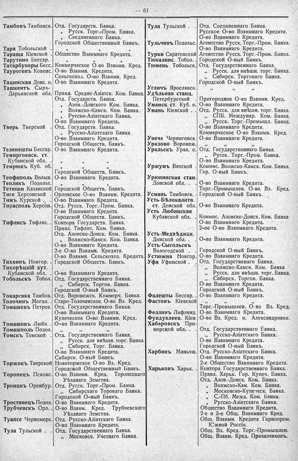

Лист источника 107
Скан

Распознанный текст
-- 61 --
Тамбовъ Тамбовск.
Тара Тобольской
Тараща Кіевской
Тарутино Бессар..
Татарбунары Бесс.
Таурогенъ Ковенс.
Тацинская Донс. о.
Ташкентъ Сыръ-Дарьинской обл.
Тверь Тверской
Теленешты Бессар.
Темиргоевск. ст. Кубанской обл.
Темрюкъ Куб. об.
Теофиполь Волын.
Тепликъ Подольс.
Тетюши Казанской
Тиге Херсонской
Тимъ Курской . .
Тирасполь Херсон.
Тифлисъ Тифлис. .
Тихвинъ Новгор. .
Тихорѣцкій хут. Кубанской обл. .
Тобольскъ Тобол.
Токаревка Тамбов.
Толочинъ Могил. .
Томашевъ Петрок.
Томашовъ Любл. .
Томашполь Подол.
Томскъ Томской
Торжокъ Тверской
Торопецъ Псковс.
Троицкъ Оренбург.
Тростянецъ Подол.
Трубчевскъ Орл. .
Туапсе Черноморс.
Тула Тульской .
Отд. Государств. Банка.
„ Русск. Торг.-Пром. Банка.
„ Соединеннаго Банка.
Городской Общественный Банкъ.
„ „ „
Общество Взаимнаго Кредита.
„ „ „
Коммерческое О-во Взаимн. Кред.
О-во Взаимн. Кредита.
Сельскохозяй. О-во Взаимн. Кред.
О-во Взаимнаго Кредита.
Правл. Средне-Азіатск. Ком. Банка.
Отд. Государств. Банка.
„ Азов.-Донского Ком. Банка.
„ Волжско-Камск. Ком. Банка.
„ Русско-Азіатскаго Банка.
О-во Взаимнаго Кредита.
Отд. Государств. Банка.
„ Русско-Азіатскаго Банка.
О-во Взаимнаго Кредита.
Городской Обществ. Банкъ.
О-во Взаимнаго Кредита.
„ „ „
„ „ „
Городской Обществ. Банкъ.
Орловское О-во Взаимн. Кредита.
О-во Взаимнаго Кредита.
Отд. Русск. Торг.-Пром. Банка.
О-во Взаимнаго Кредита.
Городской Обществ. Банкъ.
Контора Государств. Банка.
Правл. Тифлис. Ком. Банка.
Отд. Азовско-Донск. Ком. Банка.
„ Волжско-Камск. Ком. Банка.
О-во Взаимнаго Кредита.
2-е О-во Взаимн. Кредита.
О-во Взаимн. Сельскохоз. Кредита.
Городской Обществ. Банкъ.
О-во Взаимнаго Кредита.
Отд. Государственнаго Банка.
„ Сибирск. Торгов. Банка.
Городской О-ный Банкъ.
Отд. Воронежск. Коммерч. Банка.
Старо-Толочанское О-во Вз. Кред.
Отд. Государственнаго Банка.
О-во Взаимнаго Кредита.
Купеческое О-во Взаимн. Кред.
О-во Взаимнаго Кредита.
„ „ „
Отд. Государственнаго Банка.
„ Русск. для внѣшн. торг. Банка.
„ Сибирск. Торг. Банка.
О-во Взаимнаго Кредита.
Сибирск. О-ный Банкъ.
Новоторжское О-во Вз. Кред.
Городской Общественный Банкъ.
О-во Взаимн. Кред. Торопецкаго Уѣзднаго Земства.
Отд. Русск. Торг.-Пром. Банка.
„ Сибирскаго Торговаго Банка.
Городской О-ный Банкъ.
О-во Взаимнаго Кредита.
О-во Взаим. Кред. Трубчевскаго Уѣзднаго Земства.
Отд. Русско-Азіатскаго Банка.
О-во Взаимнаго Кредита.
Отд. Государственнаго Банка.
„ Московск. Учетнаго Банка.
Тула Тульской .
Тульчинъ Подольс.
Турки Саратовской
Тюкалинс. Тобол. .
Тюмень Тобольск.
Угличъ Ярославск.
Удѣльная станц. Петербургской
Уманск. ст. Куб. о.
Умань Кіевской .
Унеча Черниговск.
Уразово Воронеж.
Уральскъ Урал. о.
Уржумъ Вятской
Урюпинская стан. Донской обл. .
Усмань Тамбовск. .
Усть-Бѣлокалитв. ст. Донской обл.
Усть Любинская Кубанской обл.
Усть-Медвѣдицк. Донской обл. .
Усть-Сысольскъ Вологодской
Устюжна Новгор.
Уфа Уфимской .
Фалешты Бессар. .
Фастовъ Кіевской
Феллинъ Лифлянд.
Фундуклеев. Кіев.
Хабаровскъ Приморской обл. .
Харбинъ Маньчж.
Харьковъ Харьк. .
Отд. Соединеннаго Банка.
Русское О-во Взаимнаго Кредита.
О-во Взаимнаго Кредита.
Агентство Русск. Торг.-Пром. Банка.
О-во Взаимнаго Кредита.
Агентство Русск. Торг.-Пром. Банка.
Городской О-ный Банкъ.
Отд. Государственнаго Банка.
„ Русск. для внѣшн. торг. Банка.
„ Сибирск. Торговаго Банка.
Городской О-ный Банкъ.
„ „ „
Пригородное О-во Взаимн. Кред.
О-во Взаимнаго Кредита.
Отд. Русск. для внѣшн. торг. Банка.
„ СПБ. Междунар. Ком. Банка.
„ Русск. Торг.-Промышл. Банка.
О-во Взаимнаго Кредита.
Коммерческое О-во Взаимн. Кред.
О-во Взаимнаго Кредита.
„ „ „
Отд. Государственнаго Банка.
„ Русск. Торг.-Пром. Банка.
О-во Взаимнаго Кредита.
Коммис. Волжско-Камск. Ком. Банка.
Гор. О-ный Банкъ.
О-во Взаимнаго Кредита.
Торг.-Промышлен. О-во Вз. Кред.
Городской О-ный Банкъ.
О-во Взаимнаго Кредита.
Коммис. Азовско-Донск. Ком. Банка
О-во Взаимнаго Кредита.
2-ое О-во Взаимнаго Кредита.
О-во Взаимнаго Кредита.
Городской О-ный Банкъ.
О-во Взаимнаго Кредита.
Отд. Государственнаго Банка.
„ Волжско-Камск. Ком. Банка
„ Русск. для внѣшн. торг. Банка.
„ Сибирск. Торгов. Банка.
О-во Взаимнаго Кредита.
Городской О-ный Банкъ.
О-во Взаимнаго Кредита.
„ „ „
Торг.-Промышлен. О-во Вз. Кред.
О-во Взаимнаго Кредита.
О-во Вз. Кред. м. Александровки.
Отд. Государственнаго Банка.
„ Русско-Азіатскаго Банка.
О-во Взаимнаго Кредита.
Городской О-ный Банкъ.
Отд. Русско-Азіатскаго Банка.
О-во Взаимнаго Кредита.
2-е Общество Взаимнаго Кредита.
Контора Государственнаго Банка.
Правл. Харьк. Гор. Купеч. Банка.
Отд. Азов.-Донск. Ком. Банка.
„ Волжско-Кам. Ком. Банка.
„ Московско-Купеческ. Банка.
„ С.-Пб. Межд. Ком. Банка.
„ Русско-Азіатскаго Банка.
Общество Взаимнаго Кредита.
2-е и 3-е Общ. Взаимнаго Кред.
Общ. Взаимн. Кредита Горнопром. Южной Россіи.
Общ. Вз. Кред. Торг.-Промышлен.
Общ. Взаим. Кред. Приказчиковъ.